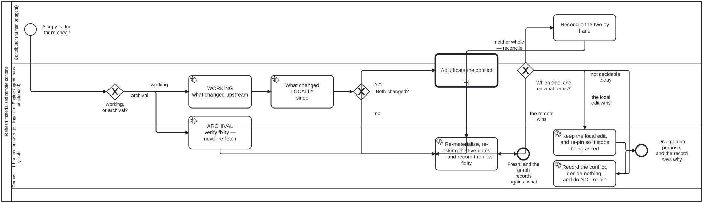

Generated from
cat-harness/processes/library/refresh-materialized.bpmnbygen-processes-viz.ts— do not edit here. All processes
Process_RefreshMaterialized · strict · 8 step(s)
Keep a materialized copy of remote content current: what changed upstream, what changed locally, and what to do when both did — an archival copy is never re-fetched and gets a fixity check instead. Owner, 2026-09-20: “also need to know about refreshing amterialed remote content. general process used everywhere.”
REFRESH IS NOT RE-IMPORT, and the difference is the whole diagram. It needs three answers, not one: what changed upstream, what changed locally since, and what to do when BOTH did. upstream-pins.json answers the first for one caller and nothing answers the other two anywhere.
An ARCHIVAL copy is not refreshed. Re-fetching it would defeat it: the copy exists to survive the source, so replacing it with whatever the source says today discards exactly the state it was keeping. What an archive gets instead is a FIXITY CHECK — has our copy rotted — which is a different question with a different remedy.

| lane | role | what it does here |
|---|---|---|
| Contributor (human or agent) | user |
Reached only when both upstream and local changed, which is the one case this process refuses to resolve by rule: which side wins depends on why the local edit was made, a fact only this lane has. |
| Ingestion Engine (agent, runs unattended) | ingestion-agent |
Runs whichever of the two paths Gateway_Purpose selects. On the working path it answers the two comparisons — upstream and local — whose combination Gateway_Both reads to decide whether a human must adjudicate; on the archival path it never compares to the source at all, since fixity asks only whether the copy itself rotted. |
| Corpus — L1 source knowledge graph | corpus |
Where the refreshed content actually lands, and the one place the five import gates are re-asked rather than inherited — a licence can change since the original import, and a collection can grow past a size somebody already agreed to, so passing the gates once is never treated as passing them for good. |
Every one of the 8 step(s) is documented.
| step | lane | skill / sub-process | what it does |
|---|---|---|---|
ARCHIVAL verify fixity — never re-fetchTask_Fixity |
Ingestion Engine (agent, runs unattended) | materialize-remote |
Re-compute the digest and compare. An archive is NEVER re-fetched — the source is what it exists to survive, so replacing it with today’s version discards the state it was keeping. A mismatch means OUR copy rotted, and the remedy is restoration from a backup, not re-download. |
WORKING what changed upstreamTask_Upstream |
Ingestion Engine (agent, runs unattended) | materialize-remote |
Compare the recorded upstreamVersion against the source. could not reach the source is a THIRD answer and is never reported as unchanged — an unreachable source is the sourceLoss gate firing late. Reachability is asked by bun run cat sources:liveness <instance> against the node’s resolvable IRI, its Handle first: live, gone, or could not determine, never live on an error (bean 08u4). |
What changed LOCALLY sinceTask_Local |
Ingestion Engine (agent, runs unattended) | materialize-remote |
The half nothing answers today. A materialized copy that was edited in place is not a copy any more, and overwriting it silently destroys work whose existence the process never established. |
Adjudicate the conflictTask_Adjudicate |
Contributor (human or agent) | calls Adjudicationmaterialize-remoteadjudication |
A human or agentic decision, never a merge rule. Which side wins depends on why the local edit was made, and a process that picked automatically would be choosing without the one fact that decides it. |
Reconcile the two by handTask_Reconcile |
Contributor (human or agent) | materialize-remote |
Neither side wins whole: the contributor produces content that is neither the local copy nor the remote one, and THEN it is applied. Drawn as a separate step before Task_Apply rather than folded into it, because Task_Apply re-asks the five import gates against what is being materialized — and what is being materialized here is a hand-made artefact, which is exactly the case those gates should see rather than be told about. |
Re-materialize, re-asking the five gates — and record the new fixityTask_Apply |
Corpus — L1 source knowledge graph | materialize-remote |
The gates are re-asked, not inherited: a licence can change, and a collection can grow past the size a caller agreed to. AND THE NEW FIXITY IS RECORDED IN THE SAME CHANGE. This step rewrites bytes that a materialization record describes, so leaving the old digest behind would make a CORRECT run of this process fail check:materialized-fixity as a mismatch — the gate reading “somebody edited held content without saying so” about the one process whose job is to replace it. Measured 2026-09-22 (bean 10s1): this task named no fixity write at all. This is the owner’s publication exception, stated as a rule rather than as a carve-out. The exception is NOT “these actors may skip the rule”; it is “say what you did”. A writer that updates the digest alongside the bytes passes, and the record then describes what is actually there. A writer that does not fails, correctly, because it has forked upstream silently. A list of permitted writers would go stale the first time somebody added a sixth one; this does not. |
Keep the local edit, and re-pin so it stops being askedTask_KeepLocal |
Corpus — L1 source knowledge graph | materialize-remote |
The local edit wins, so nothing is re-materialized — and the pin moves to the upstream revision that was compared against. Re-pinning is the half that is easy to forget and is the reason this is a step rather than an absence: without it the same upstream change is detected as new on every cycle, and a contributor is asked the same settled question for ever. The record says the copy is deliberately divergent FROM a named revision, which is a different claim from being stale against an unknown one. |
Record the conflict, decide nothing, and do NOT re-pinTask_RecordConflict |
Corpus — L1 source knowledge graph | materialize-remote |
Both copies stay and the conflict is written down with what each side says. Deliberately does not re-pin, which is the one thing separating it from Task_KeepLocal: the question is unresolved, so it must be asked again next cycle. Recording is not optional here for the reason A_RecordEntry is not optional in an adjudication — a judgement nobody wrote down is indistinguishable from a check that never ran, and a DEFERRAL nobody wrote down is indistinguishable from a refresh that silently did nothing. |
Every one of the 3 decision(s) is documented.
| decision | what decides it | branches |
|---|---|---|
working, or archival?Gateway_Purpose |
Is this copy kept as a working copy or as an archive? archival only verifies fixity and never re-fetches; working asks what changed upstream. |
archival → ARCHIVAL verify fixity — never re-fetch working → WORKING what changed upstream |
Both changed?Gateway_Both |
Did the copy change both upstream and locally since it was fetched? yes goes to adjudicating the conflict; no re-materializes, re-asking the five gates, and records the new fixity. |
yes → Adjudicate the conflict no → Re-materialize, re-asking the five gates — and record the new fixity |
Which side, and on what terms?GW_Outcome |
Four answers, and they do four different things — which is the whole reason this gateway now exists. Until 2026-09-23 the adjudication flowed straight to Task_Apply, so the process ASKED which side wins and then always applied the remote. The judgement was made and discarded. Bean bvuk.defer is not local wearing a different hat: local decides and re-pins, so the same conflict stops being raised; defer deliberately does not decide and does not re-pin, so it is raised again next cycle. A process that could only decide would force a contributor with no answer today to invent one. |
the remote wins → Re-materialize, re-asking the five gates — and record the new fixity the local edit wins → Keep the local edit, and re-pin so it stops being asked neither whole — reconcile → Reconcile the two by hand not decidable today → Record the conflict, decide nothing, and do NOT re-pin |